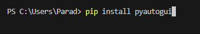
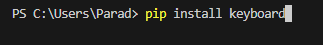
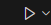

print("This macro will farm the retro swarm challenge, giving honeysuckles, oils")
print("red/blue extracts, tickets and many more. This macro can help out a ton")
print("in early game when getting the crafting materials can be hard. ")
Install all libarys:
print("Install all of the libarys required for the macro/program")
print("These include: pyautogui, pydirectinput, psutil. Make sure")
print("That when you install these you put it in the terminal and")
print("visual studio code is run as admin. (the images are a example)")


Run the code:
print("Press the play button to start the code, To stop")
print("the code close visual studio code. There are 2 files")
print("that you can use to start the code, if you are in the")
print("retro challenge lobby finding area then run autoretro.py")
print("but if you have roblox closed then run reopenroblox.py")
print("and it will open for you and get you into the lobby area")
print("Download is in the discord server, join for the download.")
